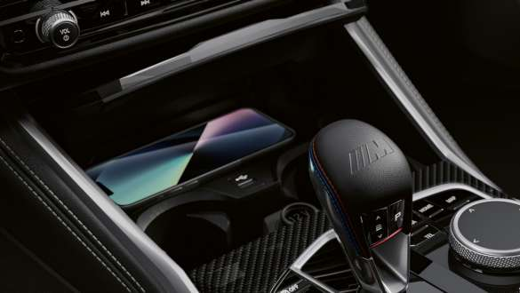
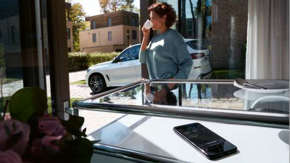

Koncept rada, usluge i sistemi za asistenciju vozacu u novom BMW M2 Coupe
Leziste za bezicno punjenje
Sa lezistem za bezicno punjenje, svoj pametni telefon u mozete puniti u
pokretu bezicno i stoga izuzetno komforno. U prosirenom prostoru za
skladistenie ima mesto zo vece uredaje - na dohvat ruke i bez
dosadnih poklopaca i kablova. Induktivni sistem punjenja takode ima
ugradjeno hladenje za zastitu vasih uredaja od pregrevanja.
BMW daljinska nadogradnja softvera
Najnovija verzija softvera uvek obezbedjena: Sa daljinsikom
nadogradnjom softvera, vas BMW M automatski prima sve nadogradnje
putem mobilnog telefona ili aplikacije My BMW. Mozete jednostavno
preuzeti softver sa svog pametnog telefona ili sa SIM kartice instalirane
u vasem vozilu i zatim ga instalirati.